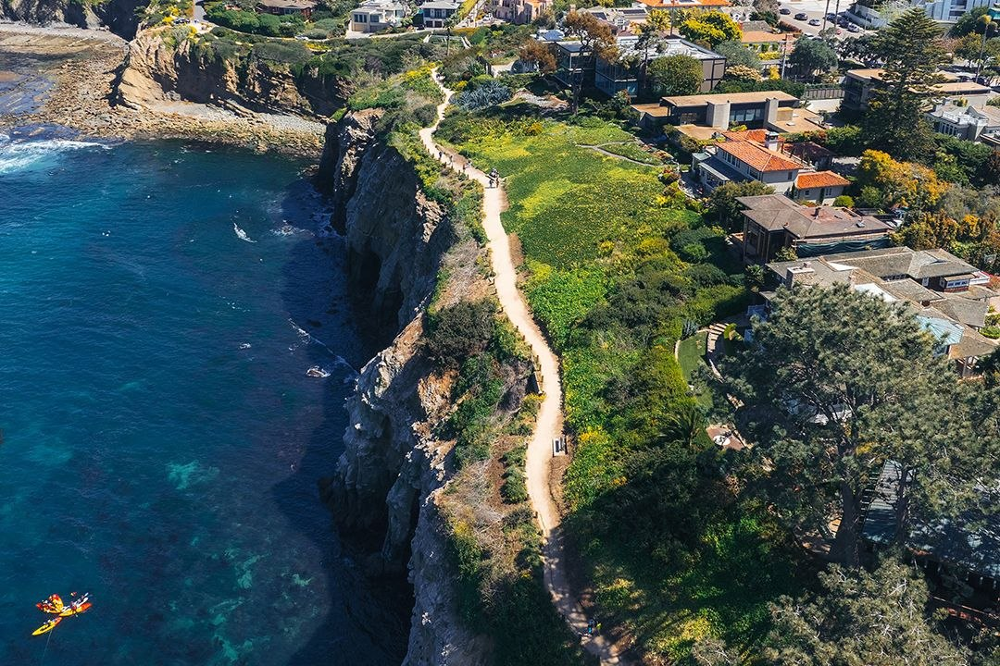

大佬與朋友嘅 La Jolla 絕美海景漫步之旅

La Jolla Coast Walk Trail 係 San Diego 最具代表性嘅步道，沿住 breathtaking 嘅懸崖海岸線，可以俯瞰太平洋壯麗景色，仲有機會睇到海獅同埋自然海蝕洞。呢度係一班朋友休閒 hea 行、影相打卡嘅絕佳地方。
路線長度： 來回約 0.5 - 1 mile，輕鬆易行。
停車建議： 建議在 Coast Blvd 尋找路邊停車位（週末熱門，宜早到）。
起點連結： 點擊打開 Google Maps